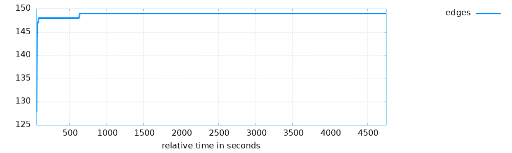
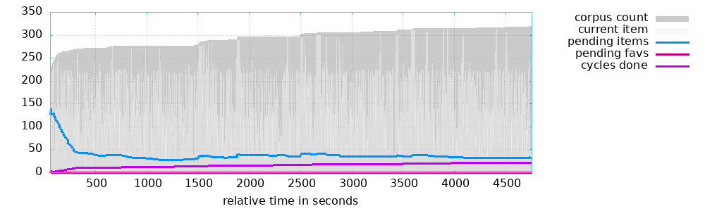
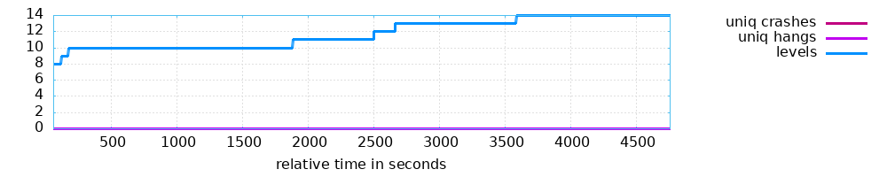
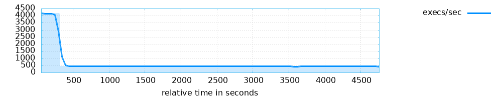

<table style="font-family: 'Trebuchet MS', 'Tahoma', 'Arial', 'Helvetica'">
<tr><td style="width: 18ex"><b>Banner:</b></td><td>./cjson</td></tr>
<tr><td><b>Directory:</b></td><td>/home/ubuntu/FoRTE-FuzzBench/cjson/cjson-1.7.7/fuzzing/baseline_out_1h/default</td></tr>
<tr><td><b>Generated on:</b></td><td>Mon Apr 21 22:05:06 UTC 2025</td></tr>
</table>
<p>

<p>
<p>


